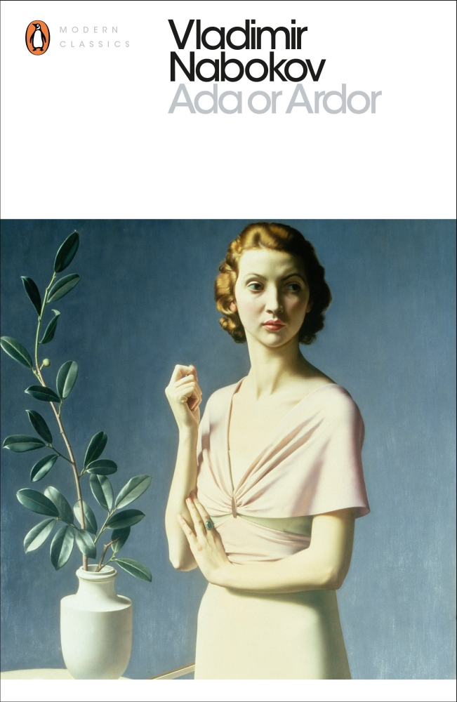
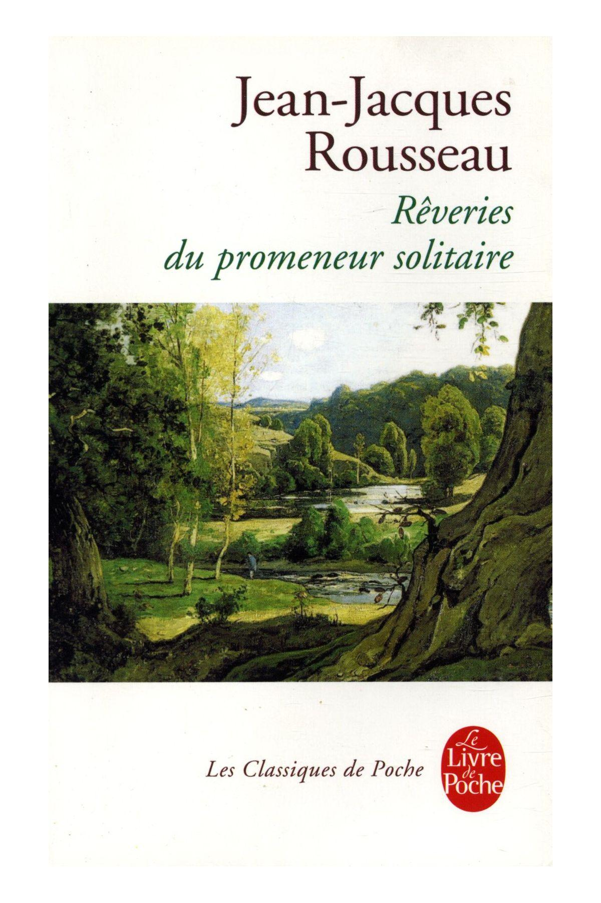

|  |
Ada or ArdorVan and Ada go on incestuous romps all over their home-planet of Anti-Terra and still make time for Gallo-Russian puns and digs at Maupassant. Certain readers will wonder if Nabokov inists on a specific Latin transliteraton for Ѣ. |
Le Temps retrouvéThe narrator convalesces à la campagne during the Great War and goes back to Paris to find himself in a molly house before going to a matinée mondaine. |
|
|  |
Rêveries d'un promeneur solitaireRouseau proto-romantically talks about plants and self-indulgently bitches about his persecution. |